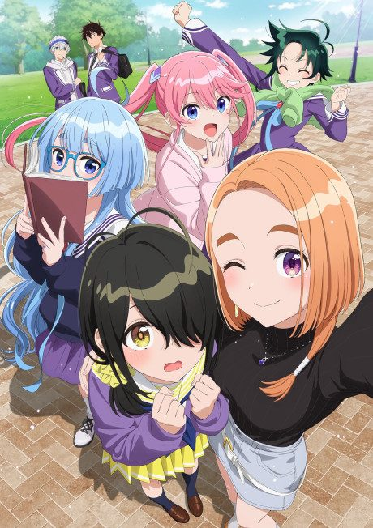
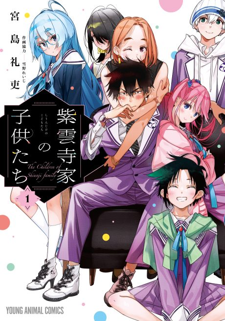

The Shiunji Family Children
紫雲寺家の子供たち
After the anime, read the manga from Chapter 35.
6.9AniList score
—Animeter, no votes yet
12episodes
Anime finished. Where does the manga pick up?
Start at Chapter35
The anime ends at chapter 34 (end of volume 5), so start at chapter 35, the first chapter of volume 6. The manga is still ongoing.
134ongoing
Season 1Start reading here